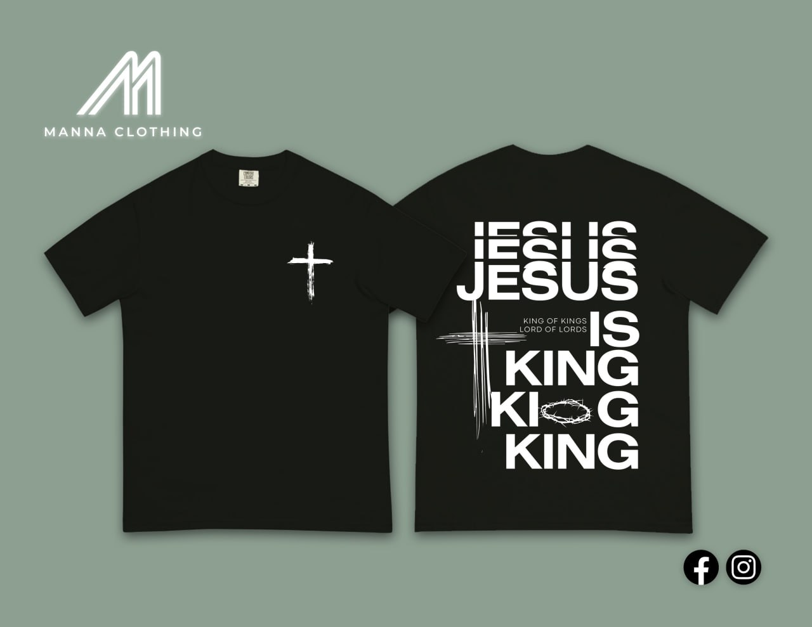

The First Drop
The Grid
Collection
Two testimonies. One canvas. Oversized, vintage-washed, built to carry a message that outlasts the trend cycle.

01 — The First Drop
Jesus
Is King
Tee
Vintage Black · Oversized Fit
King of Kings. Lord of Lords.
A minimalist paint-stroke cross rests quietly on the left chest. The back carries an oversized declaration: JESUS IS KING, layered with a crown of thorns.

02 — The First Drop
But
God
Tee
Vintage Black · Oversized Fit
There was no way, but God made a way.
A slim front-chest cross opens the story. The back carries the turning point every testimony hinges on: BUT GOD.